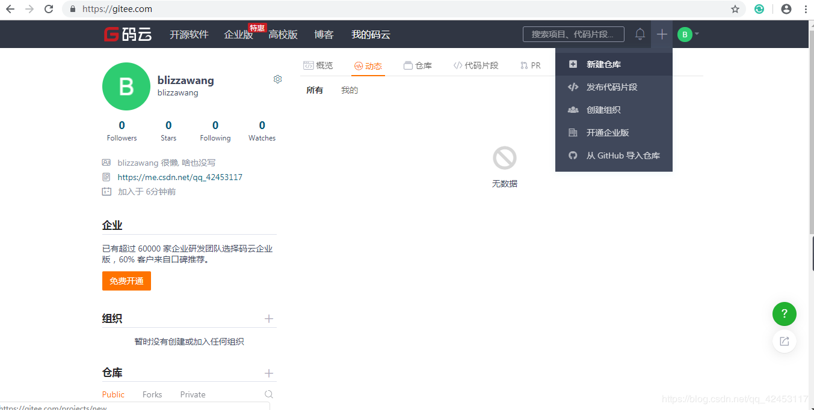
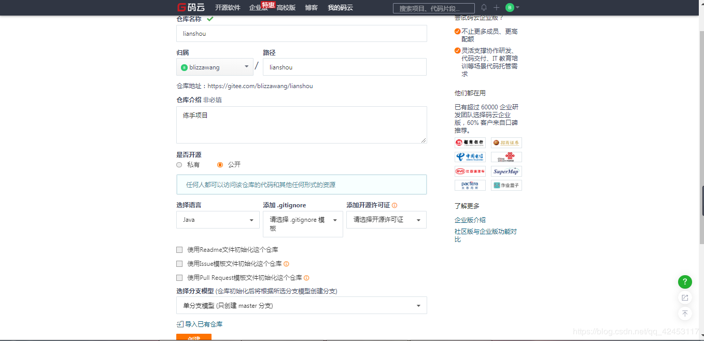
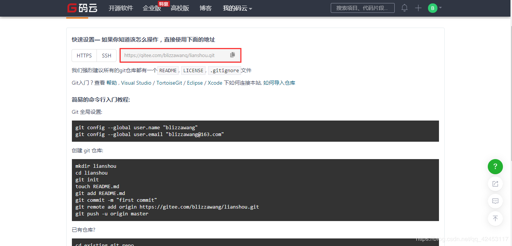
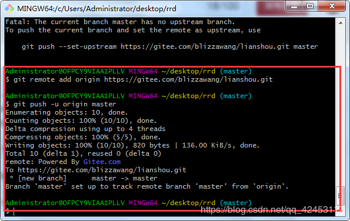
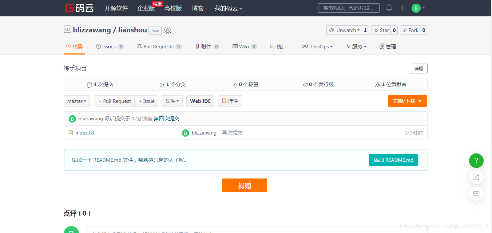

经过前面的练习，你在本地的仓库里管理代码已经比较熟练了，但如果是团队开发呢，如何配合起来呢？
我们可以把版本仓库放在互联网上，开发者把自己最新的版本推到线上仓库，同时，把线上仓库的最新代码拉到自己本地，这样，就可以配合工作了。
那么有哪些线上仓库可以供我们使用呢？国外最火的线上仓库当属GitHub了，但是，在国内，我们也有自己的线上仓库，码云，此码云非彼马云。我们点击该链接注册一个账户。https://gitee.com/
接下来我们来新建一个仓库。

用过GitHub的话，这些操作应该很简单。
我们就创建这样的一个仓库。

创建完成后是这样的。

这是一个空的仓库，仓库里没有任何东西，然后红色框线内就是你的仓库地址。
接下来我们将刚才的rrd项目推到这个线上仓库来。
我们输入
git remote add origin https://gitee.com/blizzawang/lianshou.git后面跟着的是你的仓库地址，然后输入
git push -u origin master当文件非常多的时候，第一次提交你需要输入-u，提交过后这个-u可以省略。

如果git控制台这样显示，说明推送成功了，我们刷新刚才的网页。

这样就表明我们的项目被成功推送到了线上仓库。
刚才我们通过两行指令将项目推送到了线上仓库，我来解释一下这两行指令。
其中的git remote add origin https://gitee.com/blizzawang/lianshou.git，意思是对这个仓库地址给个标记，也就是给这个仓库起个名字，名字为origin，这个名字你是可以任意取的。所以我们输入第二行指令时，git push -u origin master，这个origin代表的即是https://gitee.com/blizzawang/lianshou.git。按照这样的说法，我们就可以将这两句简写为一句，所以你也可以这样写。
git push -u https://gitee.com/blizzawang/lianshou.git master这两种方式是一样的效果。